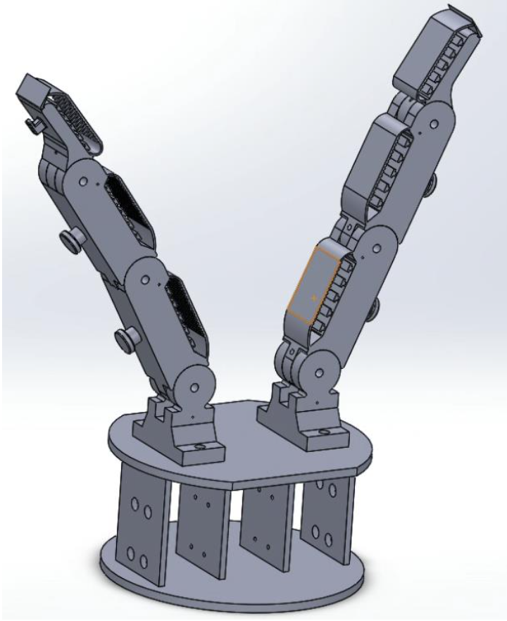
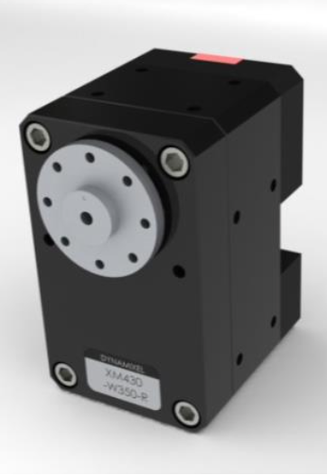

Abstract
TL;DR: The device created demonstrates the adaptive behavior of compliant, under-actuated grippers and their superior grasping capabilities under uncertainties. The device is very light-weight and was fabricated using rapid prototyping equipment and hybrid manufacturing techniques.
Above is a video demonstrating the capability of the final gripper design.
Pipeline overview
The pipeline of the development of the gripper consisted of four main parts.
Gripper Design
The first was the gripper design. It was decided that the gripper would have 3 joints per finger, each finger consisting of 3 gripper sections. These sections pivot around joints and are used to grip the objects. The tip of the finger is slightly smaller than the other joints and the fingernail is small but sticks out enough for gripping of objects. The fully built design consists of two grippers, a base and room for the motor and the tendons to be routed. The molding compound will be poured into the mold areas atop each finger, allowing the gripper to grip objects with compliance.
Motor Selection and Tendon Routing
The next step was motor selection and tendon routing. The motor selection was simple process An XM430 motor was selected for this project. The XM was chosen due to the design of the motor enclosure and its minimal mass. The enclosure comes with holes pre-threaded on the sides of the motor. This means the motor can be easily attached to the main base of the gripper, simply by screwing through the base and the motor. This not only adds simplicity to the design, but ensures the design remains lightweight from the small motor mass and that extra mounting material and housings are not needed.

The tendon chosen was a rope tendon. A Nylon tendon would also work; however, this would stretch when the motor applied larger torques.
The rope provided strength and maneuverability. For the tendons to attach to the motors a pulley system was designed. This pully attaches to the motor,
and the tendons are routed onto it through the holes on the edges of the pulley.
Above are the two pulley designs that were used in the design. The initial design is on the left.
The initial design (shown on the left) was constantly breaking under larger loads and was not able to
transmit force very well. So, a new design needed to be developed.
To combat the design flaws, another pulley was designed (shown on the right). This time the pulley has a
smaller diameter for the tendon to wrap around but a filleted edge was added to the design. This strengthened
the pulley tremendously.
The smaller holes shown on the new design are to fix the pulley to the motor, and the larger hole is to
tie the tendon through.
Passive Extension
Each gripper needs to have a mechanism for passive extension. The tendons and motor provide
active extension; however, a method of passive extension must be present. The passive
extension aids with gripping of the objects, prevents out of plane motion of the finger and
reduces the number of actuators needed in the system.
Many grippers use springs between sections as the passive extension. However, in aiming for lightweight design this option is often not the best.
For this design we chose to use elastic bands between the gripper sections. This is a versatile and robust solution as more bands can be added for a
stiffer passive extension or bands can be removed for a more elastic passive extension. All while remaining lightweight.
Gripper Pads
Following the printing of the parts, Vitaflex-20 was poured into the mould areas of the gripper.
The Vitaflex ensures that the gripper has a soft section
of material used for gripping the objects (this can be seen as the red section in the image).
Making the design semi-compliant.
A Hybrid Deposition Manufacturing (HDM) approach was taken to the design.
This meant that when the molding was done, extra section of the gripper could be removed
and tossed aside.
Experimental Findings
One of the problems the gripper had is that the fingers were too large.
This meant that when gripping large objects such as the 1.5L bottle,
the fingers could not wrap around very well. The large finger size also meant that
force transmission was hindered by a large degree and pinch grips (with the fingertips)
were almost impossible.
Therefore, the middle section of the fingers was removed. Leaving a two-joint gripper design.
This greatly improved force transmission and geometric grasping capabilities.
This updated gripper can be seen in image below

Acknowledgements
I would like to specially thank my Biomechatronics 2020 professor, Minas Liarokapis, without whom this project could not have been completed. I would like to also thank Yale University, their works and previous designs in dexterous grippers were of great use.